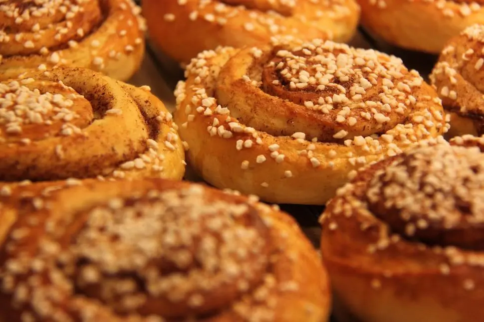

Home
Homemade Cinnamon Rolls

Soft cinnamon rolls with seasame seeds.
Hello everyone! Today, I bring a cinnamon roll recipe that's been going around my family for 50 years already! This delicious cinnamon roll is the perfect pastry to bring to an afternoon tea party!
And I have a special ingredient we're going to use here: roasted seasame seed! With a gooey, cinnamon flavoured middle, the roasted seasame seeds pair really well breaking the sweetness of this pastry and making it even more enjoyable.
Ingredients
dough (18 units)
- 10g of dry yeast
- 240ml of lukewarm full fat milk
- 75g of unsalted, room temperature butter
- 100g of sugar
- 2 gently stirred eggs
- 1 teaspoon of salt
- 600g of wheat flour
cinnamon sauce
- 75g of unsalted, room temperature butter
- 200g of brown sugar, mixed with 30 to 40g of cinnamon
Steps
Time required: 02:30 Hours
- In a bowl, add the dry yeast and the lukewarm milk and mix it untill the yeast has dissolved.
- After that, add 75g of butter, 100g of sugar, 2 eggs and the teaspoon of salt and mix well.
- When everything is really well mixed, slowly add the wheat to ensure an homogenous and soft dough.
- Seal the bowl with film and let the dough rest for 1 hour.
- If after one hour the dough is still sticking to your finger, add a bit of flour until it stops.
- remove the dough from the bowl and spread flour in a counter. Then, put the dough on top and spread it in a rectangle of roughly 55cm x 45cm.
- spread the other 75g of butter on the dough and sprinkle the brown sugar mixed with cinnamon.
- After that, roll the dough and, with the help of a piece of floss, cut the rolls with approximately 3cm in size and put them in a buttered baking pan.
- Let it sit, covered, until it doubles in size.
- Finally, bake it in a pre-heated oven at 180 Degrees Celsius or 356 Fahrenheit for 30 minutes.
- While the rolls are baking, quickly roast your preferred amount of seasame seeds, and sprinkle them on top of the cinnamon rolls once they're finished.
- Take them out of the tray after they cool down a little bit and enjoy!